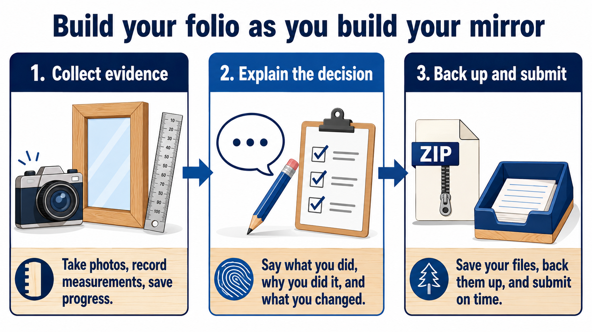

Evidence first
Show the decisions, process and result
A strong folio is not perfect-sounding waffle. It shows what you planned, what evidence you collected, what went wrong, what you changed and what the finished mirror proves.
- 1. CollectTake a useful photo, sketch or note.
- 2. ExplainSay what it proves and why it matters.
- 3. Back upDownload your ZIP before changing devices.

Your session
Student details and saving
Ready. Autosave is on.
0 of 12 evidence cards completeAdd a response and evidence note to complete a card.
When your teacher asks
Submit your evidence
Download your ZIP backup. It includes your answers and the photos you attached. Upload that one ZIP file to the Mirror Project folio assignment in Google Classroom.
ZIP
answers + photos
answers + photos